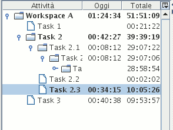

L'albero delle attività consente di organizzare in gerarchia le attività tracciate.

Illustration
1: L'albero delle attività
Esso non presenta vincoli di alcun genere, pertanto è possibile organizzarlo come risulta più opportuno, ed adattarlo nel tempo alle proprie necessità.
Ogni elemento dell'albero rappresenta un'attività; è quindi possibile associarvi delle azioni, ossia delle registrazioni che indicano come l'utente abbia dedicato ad una particolare attività un certo periodo di tempo.
Cliccando con il tasto destro del mouse su un elemento dell'albero è possibile rinominarlo, eliminarlo, inserirvi delle nuove sotto-attività, o effettuare diverse altre azioni disponibili quali copiare, tagliare e incollare.